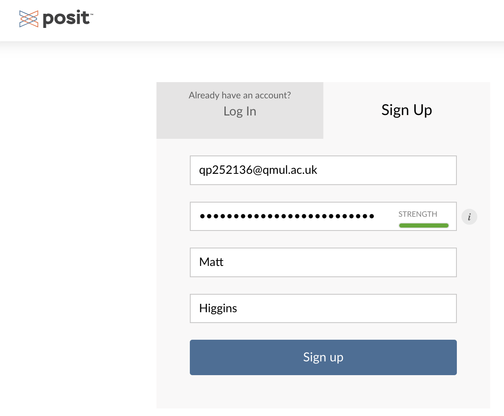
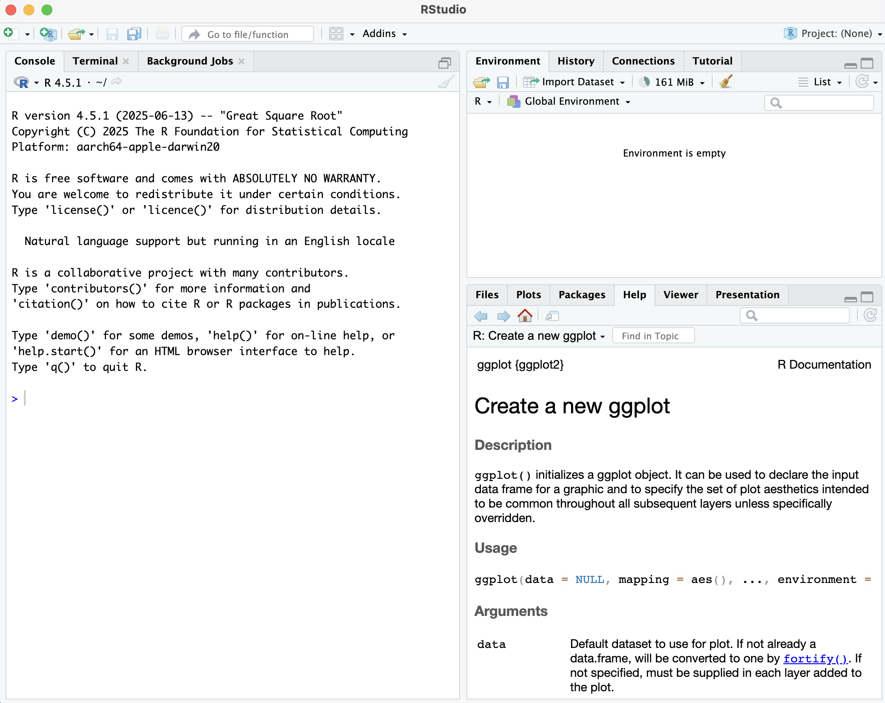

Rstudio Cloud
Please follow the steps outlined below to get set up on RStudioCloud.
We are using RStudioCloud because:
- It allows us to access your workspace and help debug any issues.
- Provides a single environment where you can complete the final coursework.
- No need to install R or RStudio on your own computer—everything runs in the cloud.
- Ensures everyone has the same software versions and packages, reducing compatibility problems.
- Your work is automatically saved and backed up online.
- You can access your projects from any device with an internet connection.
- Makes collaboration and sharing code with instructors and classmates easier.
Step 1: Find RStudioCloud
Please visit the RStudioCloud workspace (Posit Cloud) by CLICKING THIS LINK.
This will redirect you to a page which looks like that below:

Step 2: Register for a new account.
If you have not already registered, please sign up for a new account. Make sure to use your QMUL email address

Step 3: Access your workspace.
Once logged in, select to join the BIO773P-2025 workspace as shown on the left-hand side.
Perfect! You are now all set to go!
Please only complete the section below if you would like to have R installed on a local device to practice offline.
OPTIONAL: Local Installation of R.
You may want to install R & RStudio on your local computer. This will give you somewhere to practice when you are "offline" (aka not connect to the internet). If you have your own laptop I would recommend doing this.
Step 1: Head to the The Comprehensive R Archive Network

Step 2: Select your operating system (MacOS, Windows, Linux)
Setp 3: Follow installation instructions for given operating system
For example for an apple silicon Mac I would select to install the package R-4.5.1-arm64.pkg
Step 4: Validate R Installation
Following installation, search for R in your installed programs. Click on it and bring up the R console.


Step 5: You can now install RStudio
Please go to the website: https://posit.co/downloads/ and follow the guided download process. Make sure to select the FREE option.
